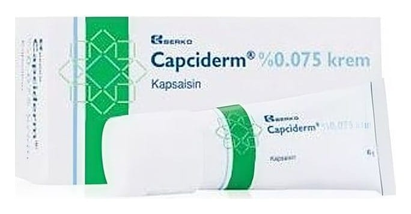

Capciderm %0,075 Krem, 45 g

Ne için kullanılır
KT · Bölüm 1• CAPCİDERM; 45 gram krem içeren yüksek dansiteli polietilen (HDPE) masaj başlıklı kapak ile kapatılmış alüminyum tüplerde pazarlanan, kapsaisin içeren ve haricen kullanılan bir kremdir.
• CAPCİDERM, - Zona (Herpes zoster) olduktan sonra deri yüzeyine yakın sinirlerden kaynaklanan ağrının giderilmesinde - Şeker hastalığı nedeniyle ellerine veya ayaklarına giden sinirlerde hasar olan hastalarda ağrının giderilmesinde - Eklem iltihabı, eklem kireçlenmesi, kas ve eklem ağrılarının giderilmesinde kullanılır.